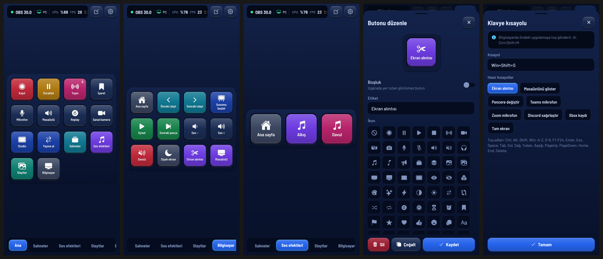
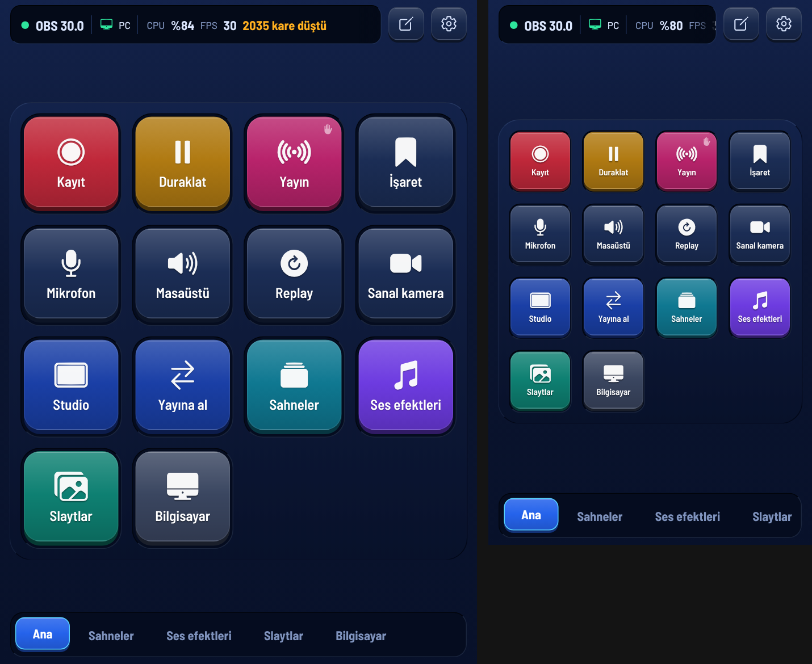

Telefonunu OBS'in tuş takımına çevir.
DeckPad sahneleri değiştirir, kaydı ve yayını yönetir, ses efekti çalar. Bilgisayarda StudioHub açıksa slaytları ilerletir, klavye kısayolu ve medya tuşu gönderir. Kurulum üç adım.
-
1Bilgisayarda
OBS Studio'yu kurobsproject.com · ücretsizOBS 30 ya da üstü gerekir. Zaten kuruluysa bu adımı geç.
-
2Bilgisayarda
StudioHub.exe'yi indirWindows · 64 bit · kurulum yokİndirdiğin dosyayı aç. OBS kapalıyken OBS'i hazırla'ya, sonra OBS'i aç'a bas. Bu, OBS'in WebSocket sunucusunu açar; DeckPad panelini ve ses efektleriyle slaytları kuran betiği OBS'e ekler.
-
3Telefonda
DeckPad.apk'yı indirAndroid · telefonaAPK'yı telefonda açıp kur. DeckPad'i aç, QR kodu okut'a dokun ve StudioHub penceresindeki kodu göster. OBS ve bilgisayar birlikte bağlanır.
Bilgisayardan okuyorsan bu kodu telefonun kamerasıyla okut; APK doğrudan iner.
İlk bağlantıda Sahneler ve Ses efektleri sayfaları OBS'teki sahne ve kaynaklarla dolar. Sonraki açılışlarda DeckPad kendisi bağlanır.
Kurarken karşına çıkabilecekler
-
Windows SmartScreen uyarısı
StudioHub imzasız. "Windows bilgisayarınızı korudu" derse Ek bilgi › Yine de çalıştır.
-
Bilinmeyen kaynak ve Play Protect
DeckPad Play Store'dan gelmiyor ve hata ayıklama anahtarıyla imzalı. Android, APK'yı açtığın uygulamaya (tarayıcı ya da Dosyalar) bilinmeyen uygulama yükleme izni ister; Play Protect uyarı gösterebilir.
-
Güvenlik duvarı
Windows izin sorarsa Özel ağlar'ı işaretleyip izin ver. Telefon bağlanamıyorsa StudioHub › Ayarlar › Güvenlik duvarı › İzin ver.
-
Hangi telefonlar
64 bit ARM (arm64-v8a) işlemcili Android telefonlar; bugünkü telefonların neredeyse hepsi böyle. iOS sürümü yok.
-
Aynı Wi‑Fi
Telefon ve bilgisayar aynı ağda olmalı. Misafir ağları cihazları birbirinden yalıtır, orada bağlanmaz.
-
StudioHub olmadan
DeckPad OBS'e doğrudan da bağlanır: OBS › Araçlar › WebSocket Sunucu Ayarları › Bağlantı bilgilerini göster'deki QR'ı okut. Sunum, klavye kısayolu ve Windows ses düzeyi gibi bilgisayar eylemleri o zaman çalışmaz.
Görünüş


Aynı tuşlar bilgisayarda da
StudioHub, DeckPad'i bilgisayarda bir pencere olarak ve OBS'in içinde panel olarak açar. Tuş düzenini telefondan gönderirsen ikisi de aynı düzeni kullanır; istersen otomatik eşitlenir.
Neler yapar
-
Kayıt ve yayın
Başlat, durdur, duraklat, devam ettir. Tuşta canlı süre görünür; yayını yanlışlıkla kapatmamak için "basılı tutarak çalıştır".
-
Sahneler ve geçişler
Sahne sayfası OBS'teki sahnelerle dolar. Studio Mode, önizlemeyi yayına alma, geçiş türü ve süresi. Yayındaki sahne kırmızı, önizleme yeşil yanar.
-
Ses ve ses efektleri
Mikrofonu ve masaüstü sesini sustur, düzeyini ayarla. Kendi ses dosyalarını OBS'e efekt olarak ekle, tek tuşla çal.
-
Kaynaklar ve filtreler
Logo, alt yazı, kamera gibi kaynakları göster ya da gizle, filtreleri aç kapat. Replay, kayda işaret, sanal kamera ve OBS kısayolları da var.
-
Sunum ve bilgisayar
StudioHub ile: slaytları ilerlet, klavye kısayolu ve medya tuşu gönder, Windows ses düzeyini değiştir, uygulama ya da web sayfası aç, hazır metin yaz.
-
Kendi tuş düzenin
Sayfalar, sürükle bırak, etiket, ikon ve renk. Bir tuşa birden çok adım ekleyip araya bekleme koyabilirsin. Yanlış değişikliği geri al.